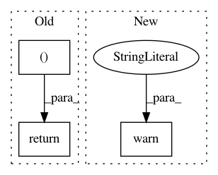

44edfba78536668c2240e8e722029741a547bd9a,chainercv/transforms/image/rotate.py,,rotate,#Any#Any#Any#Any#Any#,21
Before Change
elif interpolation == PIL.Image.BICUBIC:
interpolation_order = 3
return scipy.ndimage.rotate(
img, angle, axes=(2, 1), reshape=expand,
order=interpolation_order, cval=fill)
After Change
if _cv2_available:
return _rotate_cv2(img, angle, expand, fill, interpolation)
else:
warnings.warn(
"Although `chainer.config.cv_rotate_backend == "cv2"`, "
"cv2 is not found. As a fallback option, rotate uses "
"PIL. Either install cv2 or set "
"`chainer.global_config.cv_rotate_backend = "PIL"` to "
"suppress this warning.")
return _rotate_pil(img, angle, expand, fill, interpolation)
elif chainer.config.cv_rotate_backend == "PIL":
return _rotate_pil(img, angle, expand, fill, interpolation)
else:
In pattern: SUPERPATTERN
Frequency: 3
Non-data size: 3
Instances
Project Name: chainer/chainercv
Commit Name: 44edfba78536668c2240e8e722029741a547bd9a
Time: 2018-11-20
Author: yuyuniitani@gmail.com
File Name: chainercv/transforms/image/rotate.py
Class Name:
Method Name: rotate
Project Name: chainer/chainercv
Commit Name: b776ae08e9e676435c5cf8d1f31a86dfd3e1897f
Time: 2018-10-20
Author: yuyuniitani@gmail.com
File Name: chainercv/utils/image/read_image.py
Class Name:
Method Name: read_image
Project Name: keras-team/keras
Commit Name: 4c3495896e77a5a4ebfeff717feb3d04681d27e7
Time: 2015-06-23
Author: xavier@whirlscape.com
File Name: keras/activations.py
Class Name:
Method Name: time_distributed_softmax